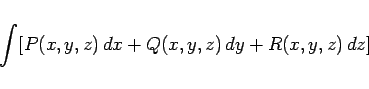
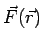
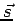
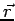
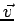
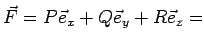
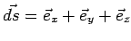
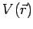

Inhalt Index DeskTop Bronstein

 Integralrechnung Kurvenintegrale Unabhängigkeit des Kurvenintegrals vom Integrationsweg
Integralrechnung Kurvenintegrale Unabhängigkeit des Kurvenintegrals vom Integrationsweg


Die Bedingung für die Unabhängigkeit des Kurvenintegrals
|  | (8.128) |
vom Integrationsweg (s. Abbildung) lautet in Analogie zum zweidimensionalen Fall:
für die partiellen Ableitungen, die ihrerseits stetig sein müssen.
| Beispiel |
|
Die Arbeit W ist als Skalarprodukt aus Kraft  und Weg  definiert. Im konservativen Feld hängt die Arbeit nur vom Ort  ab, nicht aber von der Geschwindigkeit . Mit  gradV und  sind somit für das Potential  die Beziehungen (8.129a), (8.129b) erfüllt, und es gilt (8.129c). Unabhängig vom Weg zwischen den Punkten P1 und P2 erhält man: |